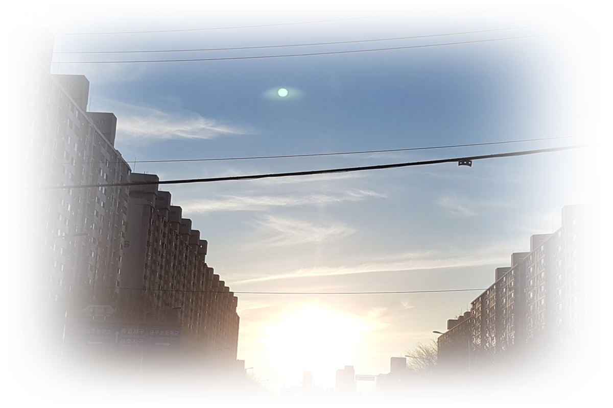

1. 청년기 수면과 자기관리의 경계
청년기의 잠은 자유로워 보이지만, 동시에 가장 쉽게 무너지는 영역이기도 하다. 보호자의 통제에서 벗어나 수면 시간과 생활 리듬을 스스로 결정할 수 있게 되지만, 그 자유는 곧 선택과 책임이라는 새로운 부담으로 이어진다. 학업, 취업, 관계, 독립이라는 현실적 과제는 밤이 되면 정리되지 않은 생각과 긴장으로 남아 잠을 방해한다. 이 시기의 수면 문제는 생활 관리의 실패라기보다, 성인기로 진입하는 과정에서 자기조절과 회복 능력이 시험받는 발달적 장면으로 이해할 필요가 있다.
이 글은 브런치북(https://brunch.co.kr/@205593d149c84b6/3) 『감정도 잠이 필요하다』 2부 3장 〈청소년기: 흔들리는 리듬, 각성의 감정〉의 내용을 바탕으로, 청소년기의 수면 변화를 문제 행동이 아닌 발달적 재조정 과정으로 이해하고자 한다. 생물학적 리듬의 이동과 정체성 탐색이 밤의 각성과 어떻게 연결되는지를 중심으로 설명한다.

2. 청년기의 발달 과제와 수면의 의미
청년기는 발달적으로 자율성과 책임이 본격적으로 통합되는 시기이다. Erik Erikson의 이론에 따르면, 이 시기는 친밀감 대 고립감의 단계로, 타인과의 관계 형성과 동시에 독립된 자아를 유지해야 하는 과제를 안고 있다. 이러한 이중 과제는 심리적 긴장을 높이며, 그 여파는 밤의 잠으로 이어진다. 잠들기 어려움이나 잦은 각성은 단순한 불면 증상이 아니라, 낮 동안 감당한 선택과 책임이 밤에 정서적으로 재현되는 과정으로 해석할 수 있다.
3. 자기관리와 수면의 붕괴
청년기의 수면은 자기관리 능력을 가장 직접적으로 드러내는 지표이다. 학업 일정, 야간 노동, 불규칙한 식사, 디지털 미디어 사용은 수면 리듬을 쉽게 흐트러뜨린다. 이때 많은 청년들은 수면을 미뤄서라도 더 많은 것을 해내려 하지만, 이러한 선택은 단기적으로는 효율처럼 보일 수 있으나 장기적으로는 회복력을 약화시킨다. 수면 부족은 집중력 저하, 감정 기복, 무기력으로 이어지며, 다시 자기관리 실패로 인식되는 악순환을 만든다. 청년기의 잠은 의지의 문제가 아니라, 삶의 구조가 감당 가능한 수준인지 점검하는 신호로 이해되어야 한다.
4. 인지적 각성과 밤의 사고 과잉
Jean Piaget가 설명한 형식적 조작기의 사고 능력은 청년기에도 지속되며, 현실 문제를 다각도로 분석하고 미래를 예측하는 능력으로 확장된다. 이러한 인지적 각성은 문제 해결에는 유리하지만, 밤이 되면 사고를 멈추기 어렵게 만든다. 잠자리에 누운 후에도 계획, 후회, 비교가 반복되며, 이는 입면 곤란의 주요 원인이 된다. 이때의 각성은 병리적 사고라기보다, 성인기의 문제 해결 방식이 아직 휴식과 분리되지 못한 상태로 볼 수 있다.
5. 교육·상담 장면에서의 실천적 접근
청년기의 수면 개입은 규칙을 강요하기보다, 삶의 구조를 함께 점검하는 방식이 효과적이다. 상담 장면에서는 “얼마나 자는가”보다 “왜 잠이 밀리는가”를 함께 탐색할 필요가 있다. 수면을 회복의 기본 조건으로 재인식하도록 돕는 것은 자기관리 능력을 강화하는 교육적 개입이 된다. 또한 완벽한 수면 리듬을 목표로 하기보다, 현실적인 범위 내에서 일관성을 확보하는 접근이 청년기의 발달 과제에 보다 부합한다.
결론
청년기의 잠은 자유와 책임이 처음으로 충돌하는 지점에 놓여 있다. 이 시기의 수면 문제는 나약함이나 관리 부족의 증거가 아니라, 성인기로 이행하는 과정에서 회복 능력이 재구성되고 있다는 신호이다. 잠을 미루는 선택은 종종 더 잘 살기 위한 시도로 시작되지만, 결국 회복이 배제된 삶은 지속되기 어렵다. 청년기의 잠을 발달적 관점에서 이해할 때, 수면은 단순한 휴식이 아니라 삶의 균형을 되찾게 하는 핵심 자원이 된다. 잘 자는 청년은, 자신의 삶을 감당 가능한 속도로 조율할 수 있는 힘을 키워 가는 중이라 할 수 있다.
“청년기의 잠은 자기관리 능력과 삶의 구조가 시험받는 지점이다.”
참고문헌
Erik Erikson(1968). Identity: Youth and Crisis. New York: Norton.
Jean Piaget(1972). The Psychology of the Child. New York: Basic Books.
정옥분 (2021). 『성인발달과 심리』. 서울: 학지사.
김미숙 (2020). 『청년기 삶의 전환과 심리적 적응』. 서울: 공동체.
이은경·박지선 (2022). 『청년의 수면과 정신건강』. 서울: 학지사.
2026.01.07 - [감정도 잠이 필요하다] - 청소년기 잠의 발달심리(3) : 잠을 미루는 밤에는 무엇이 깨어 있는가
2023.01.24 - [이론] - 프로이드의 심리성적발달이론과 에릭슨의 심리사회적발달이론 차이 비교
프로이드의 심리성적발달이론과 에릭슨의 심리사회적발달이론 차이 비교
프로이드와 에릭슨의 이론은 갈등 구조가 인간의 발달에 많은 영향을 미친다는 것을 강조하였다. 발달과정을 단계적으로 접근하면서 질적 차이와 독특한 특성으로 진행된다는 점에 인간의 성
think-sis.co.kr